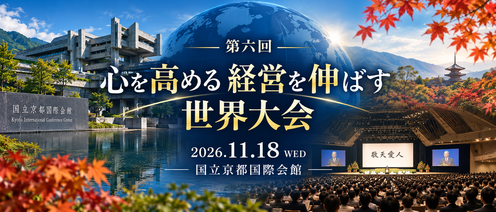

現在受付中

盛心実践会千葉・心を高める経営を伸ばす会 佐倉
9月度 合同自主例会
2026年9月29日（火）18:00〜21:00
グリーンセミナールーム（千葉市中央区）
グリーンセミナールーム（千葉市中央区）
経営12ヵ条 第4条「誰にも負けない努力をする」
第1部：誰にも負けない努力をする
第2部：フィロソフィ「ベクトルを揃える」
第3部：京セラ式コンパ
塾生：無料 ／ オブザーバー：5,000円
第1部：誰にも負けない努力をする
第2部：フィロソフィ「ベクトルを揃える」
第3部：京セラ式コンパ
塾生：無料 ／ オブザーバー：5,000円
詳しい内容・当日の進行を見る
18:00〜18:10 開会
経営12ヵ条チェックシート・勉強会の目的確認
経営12ヵ条チェックシート・勉強会の目的確認
18:10〜19:30 第1部
経営12ヵ条 第4条「誰にも負けない努力をする」
〜地味な仕事を一歩一歩堅実に、弛まぬ努力を続ける〜
経営12ヵ条 第4条「誰にも負けない努力をする」
〜地味な仕事を一歩一歩堅実に、弛まぬ努力を続ける〜
主なテーマ
- 塾長は、なぜ誰にも負けない努力を続けることができたのか
- 「自分なりの努力」と「誰にも負けない努力」の違い
- 努力を続けるために大切なこと
- 経営者の本気の努力が、周囲にもたらすもの
- 従業員が自ら努力する会社にするために、経営者は何をすべきか
グループディスカッションも行います。
19:30〜20:10 第2部
フィロソフィ「ベクトルを揃える」
フィロソフィ「ベクトルを揃える」
20:10〜21:00 第3部
京セラ式コンパ。「ベクトルを揃える」をテーマに、それぞれの経営・仕事での実践について本音で語り合います。
京セラ式コンパ。「ベクトルを揃える」をテーマに、それぞれの経営・仕事での実践について本音で語り合います。
21:00 閉会

心を高める 経営を伸ばす
第六回 世界大会
2026年11月18日（水）10:30〜
国立京都国際会館
国立京都国際会館
世界中の稲盛経営哲学を学ぶソウルメイトが一堂に会する、一年に一度の勉強会です。
参加資格：正会員・会員企業の社員・家族
参加資格：正会員・会員企業の社員・家族
世界大会について詳しく見る
通常参加費
リアル参加＋懇親会：25,000円
リアル参加のみ：17,000円
アーカイブ参加：14,000円
盛心実践会千葉の塾生向け補助については、塾生専用ページのお知らせをご確認ください。
盛心実践会 千葉・心を高める経営を伸ばす会 佐倉
合同ゴルフコンペ
2026年11月24日（火）
季美の森ゴルフ倶楽部
募集：5組20名（先着順）
季美の森ゴルフ倶楽部
募集：5組20名（先着順）
プレー費：14,800円（各自精算）
参加費：5,000円（景品代）
申込締切：11月16日（月）
参加費：5,000円（景品代）
申込締切：11月16日（月）
ゴルフコンペの詳細・申込方法を見る
会場
季美の森ゴルフ倶楽部
〒299-3241 千葉県大網白里市季美の森南2-49
TEL：0475-73-0109
千葉東金道路「山田I.C.」より約2km／圏央道「東金I.C.」より約4km
当日の予定
08:00 各自チェックイン・受付開始
08:50 開会式・ルール説明・集合写真撮影
09:22 第1組スタート
15:30 ホールアウト・入浴
16:00 懇親会場へ各自移動
17:30 表彰式＆懇親パーティー
20:30 解散予定
08:50 開会式・ルール説明・集合写真撮影
09:22 第1組スタート
15:30 ホールアウト・入浴
16:00 懇親会場へ各自移動
17:30 表彰式＆懇親パーティー
20:30 解散予定
スタート時間（OUTコース）
1組目 09:22 ／ 2組目 09:30 ／ 3組目 09:37
4組目 09:45 ／ 5組目 09:52
スタート時間の15分前にはティーグラウンドへお集まりください。
競技方法・賞品
18ホールストロークプレー（新ペリア方式）
- 順位賞（優勝・準優勝・3位）
- ベスグロ賞
- ブービーメーカー賞・ブービー賞
- ニアピン賞
- 参加賞
懇親会
参加費：7,000円（朝の受付時に集金）
会場：永興（中華料理）
千葉県千葉市中央区中央3丁目15-3 朝日プラザ千葉中央
申込方法
11月16日（月）までに、幹事へご連絡ください。
幹事担当：瀧 正之
電話：090-6333-5081
メール：赤門事務局 info@akamon.co.jp
お申し込みの際は、氏名・連絡先・平均スコア・備考／要望をお知らせください。
組合せは申込締切後に改めてご連絡します。